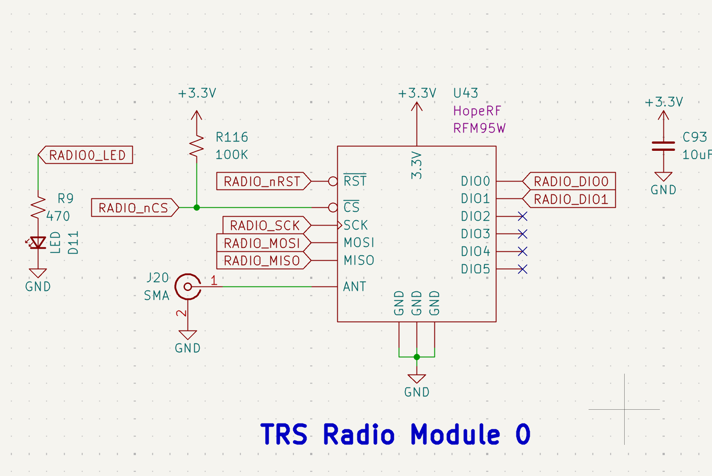
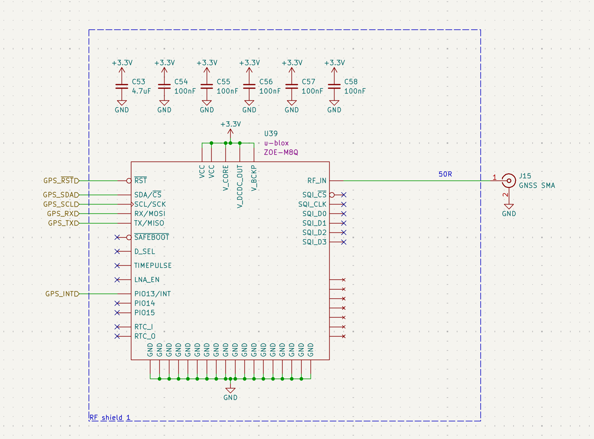
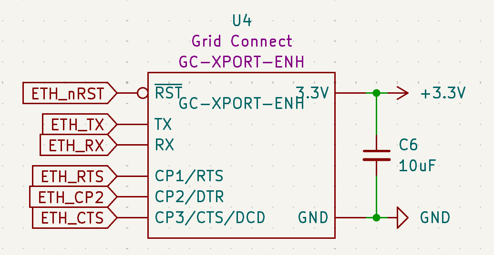

Telemetry & Communications
Dual LoRa Radio Modules (RFM95W)
The system utilizes two independent LoRa modules to provide long-range, low-power telemetry links at 915 MHz.

Figure 17: Redundant TRS Radio Modules 0 and 1.- Model: HopeRF RFM95W.
- Interface: Connected via high-speed SPI with dedicated Chip Selects (RADIO_nCS, RADIO1_nCS).
- Indicators: Visual status is provided by D11 and D39 LEDs, which trigger during active packet transmission.
- Antenna: Standard 50Ω SMA connectors (J20, J22) are utilized for external dipole or whip antennas.
- Design Defense: Dual modules allow for frequency hopping or redundant data streams, ensuring telemetry persists even if one antenna path is compromised.
GNSS Navigation (u-blox ZOE-M8Q)
For absolute positioning and time-synchronization, the ECU features a high-sensitivity u-blox GNSS module.

Figure 18: ZOE-M8Q implementation with RF shielding and active filtering.- Model: u-blox ZOE-M8Q.
- EMI Protection: The module is housed within a dedicated RF Shield to prevent internal ECU logic noise from desensitizing the GPS receiver.
- Interface: Connected via UART (GPS_RXD/TXD) for standard NMEA sentence parsing.
- Antenna: Fed through a 50Ω microstrip to an SMA connector (J15) for external active/passive GPS antennas.
Ground-Test Ethernet (Grid Connect XPort)
A hardwired Ethernet interface is provided for high-bandwidth data offloading and ground station commanding during pad operations.

Figure 19: GC-XPORT-ENH Serial-to-Ethernet implementation.- Model: Grid Connect GC-XPORT-ENH.
- Protocol: Functions as a Serial-to-Ethernet bridge, allowing the STM32 to communicate over TCP/UDP via its internal USART interface.
- Stability: Utilizes a 10uF decoupling capacitor (C6) to stabilize the 3.3V rail during high-speed data bursts.
- Control: The ETH_nRST line allows the MCU to power-cycle the module if a network hang is detected.
Communication Fail-Safes
- Independent Resets: Both LoRa radios and the Ethernet module have discrete reset lines tied to the MCU, preventing single peripheral hang from locking the communication bus.
- EMI Zoning: All RF connectors (SMA) are positioned at the board edge, away from the 24V propulsion regulation zone, to maximize signal-to-noise ratio (SNR).